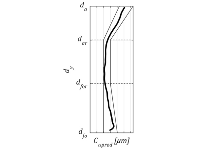

The method of prediction of tooth profile deviations in gear honing
Used tools and packages
Matlab Differential geometry Optimization ToolboxIntroduction
This project comes with my cooperation with one of the world's leading manufacturers of aerospace gears. The goal was to develop a method for effective error-free design of honing tools for airspace gears. Honing is a technological process which allows performing of final-machining of gears even in their hardened state. Gear honing provides improved gear tooth surface quality, in particular to reduce their geometric structure parameters. It also contributes to lower pitch errors, tooth runout and tooth thickness errors. Honing is therefore used in for example aerospace industry to improve the microgeometry of cylindrical gears used in aerospace engines. Such gears are machined using a technological skew gear train. A tool in the form of gear and the work gear rotate according to the gear ratio. In addition, either the tool or the work gear performs a feed motion and an additional rotation related to the screw motion parameter. The tool action surface directly reflects the physical surface of the tool.
Methods
The analysed example of honing involves external helical tooth machining:

The searched surface of the tool is represented in a coordinate system t by position vector . Likewise, work gear surface in coordinate system w is expressed by position vector . The surface of the work gear in the tool’s coordinate system is given by formula:
where Mtw is a homogenous transformation matrix from system w to system t:with the upper sign applicable to the right-hand gear tooth line, and the lower sign to the left-hand gear tooth line. Assuming that is a unit vector normal to tool surface in system t, and is a unit vector normal to gear surface in system w, unit vector normal to work gear surface in the coordinate system connected with tool may be expressed as:
where Ltw is a matrix of transformation from system w to system t. Transformation matrix Ltw is obtained by deleting the last row and the last column of the homogenous transformation matrix Mtw. The profile of the work gear in the transverse section has a form of a modified involute given by a parametric system of equations:
where: t is the profile parameter (also called the roll angle), rbW is the base circle radius of the work gear, Cα is the value of modification, φsym is an involute of the pressure angle reduced by a central angle corresponding to 1/2 of tooth space width on the pitch circle diameter in the transverse section. The position vector of the work gear’s tooth flank in the related coordinate system is obtained by simultaneously rotating transverse profile around axis zw by angle θ and its translation along the same axis by θ∙HW/(2π), which in matrix notation system is expressed by relationship:
where θ is the helix parameter. The upper sign applies to the right-hand tooth line and the lower sign to the left-hand tooth line of the work gear. Unit vector normal to the tooth surface of the work gear is given by relationship:
where partial derivatives:
Using derived relationships, a description of work gear surface in tool coordinate system can be obtained:
They are dependent on the parameters of the envelope φW, lW and work gear tooth surface parameters t, θ. According to the meshing theory, in order to determine the two-parameter envelope of a family of surfaces, the system of equations need to be solved:
Assuming that parameters of work gear surface are constant (t=const, θ=const), this system represents a nonlinear algebraic equation system with two unknowns: φW and lW. The idea behind the proposed approach is to obtain the numerical solution of equation system for all discrete values of surface parameters t and θ. For this purpose the Levenberg-Marquardt approach may be used. In this case, envelope parameters can be expressed as a function of surface parameters:
By substituting relationships the tool surface in its coordinate system is obtained as:
The above method can be easily modified for tool profile calculation purposes for any geometry of the profile of the work gear provided in a discrete way. To do this, equations must contain discrete coordinates xWi and yWi instead of profile coordinates xW and yW, as well as finite difference quotients ΔxWi/Δt and ΔyWi/Δt instead of derivatives dxW/dt and dyW/dt (for constant discretization step Δt).
Results
The proposed method will be discussed in the example of honing tool for high precision aircraft gear machining. The essence of this method is shown below:
Honing tool design process starts with defining the work gear involute profile chart. Next, in order to achieve the profile of the work gear located in the tolerance range, the honing tool profile must be determined. For this purpose, the method described in this study is applied twice: for the minimum and maximum modification of the work gear. This generates the tolerance range of the honing tool. The result may be included in the tool’s manufacturing drawing, and the modification parameters may be fed directly into relevant machine tool settings. The above approach makes it possible to calculate only the permissible tolerance area for the tool profile to ensure that the work gear profile will also be contained within the correct tolerance range. An unevenness of the profile such as waviness and curvature alterations within the tolerance range are not included. After honing tool’s teeth have been machined and its measurements are taken following a small change in the discrete method of tool profile determination, the method to assess the unevenness of the profile of the finished gear may be applied. For this purpose, it was assumed that the work gear is the tool of a profile given in a discrete way. The profile is obtained by taking measurements of the finished tool and calculating mean profile:
In this situation, the unknown profile is the profile of gear in the form of the tool. Work gear profile is determined by entering tool parameters instead of work gear parameters, and work gear parameters instead of tool parameters, applying discrete coordinates xTi and yTi instead of profile coordinates xW and yW, and finite difference quotients ΔxTi/Δti and ΔyTi/Δti instead of derivatives dxW/dt and dyW/dt. As result the predicted work gear tooth profile is obtained:
At this stage, the profile is assessed in terms of proper position within the tolerance range and waviness. If the profile is acceptable the manufacturing of work gear can be performed. If not, it is necessary to correct the profile of honing tool. This procedure should be repeated until satisfactory results are obtained. In this example it was assumed that profile is proper and final machining of work gear with the aid of designed honing tool was carried out. Figures below show results:
Good agreement between calculated and measured profile can be observed. The average value of absolute error is 0.28μm while the average standard deviation is 0.35μm. Maximum values of errors are occurring at the tip diameter and reach 1.19μm for absolute error and 1.22μm for standard deviation.
Summary
Simulations and analysis performed allowed to formulate the following conclusions:
- the proposed method may be used for simulated machining by means of a tool with a real profile (allowing for its manufacturing deviations), enabling to eliminate errors at the tool production stage,
- average uncertainty of the method in discussed example reached 0.35μm, from that reason it can be used for simulation high precision aircraft gears manufacturing,
- the use of the proposed honing tool profile determination method in computer-aided design software of gear machining tools enables the manufacturer to quickly adjust to the customer’s changing requirements, thus increasing flexibility.